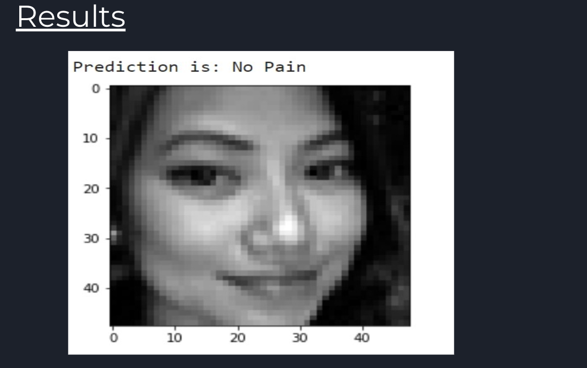

My work on this project addresses the challenge of detecting pain in facial images by distinguishing it from standard emotional expressions. I worked on the dataset which comprises 90,000+ images labeled with various emotions (anger, disgust, fear, sad, happy, neutral, and surprise), some of which can mask or mimic signs of pain. A key hurdle is deciding which emotions are indicative of discomfort, leading to the exclusion of “surprise” due to its ambiguous nature. Traditional classification approaches, such as Support Vector Machines (SVM), face difficulties in handling nuanced facial cues that may overlap between pain and non-pain states. Ultimately, my goal here is to build a robust system that can reliably classify whether a given face image reflects genuine pain or not, even under varying emotional contexts.
The initial step involved sourcing data from a public face-expression recognition dataset, then preprocessing and labeling images according to “pain” vs. “no pain” criteria. Early experiments employed SVM for basic classification, demonstrating the feasibility of both linear and non-linear decision boundaries. Subsequently, I developed a hybrid model combining Vision Transformers (ViT) and EfficientNet-V2, fine-tuning it with PyTorch Lightning on GPU clusters. Advanced techniques like curriculum learning, Albumentations-based data augmentation, and ensemble methods were integrated to boost accuracy. Finally, quantization-aware training and ONNX optimization reduced inference latency by 25%, enabling real-time deployment of the pain detection system.
View PresentationIdentification of the important regions to classify into a pain/no-pain class.
Results from my model